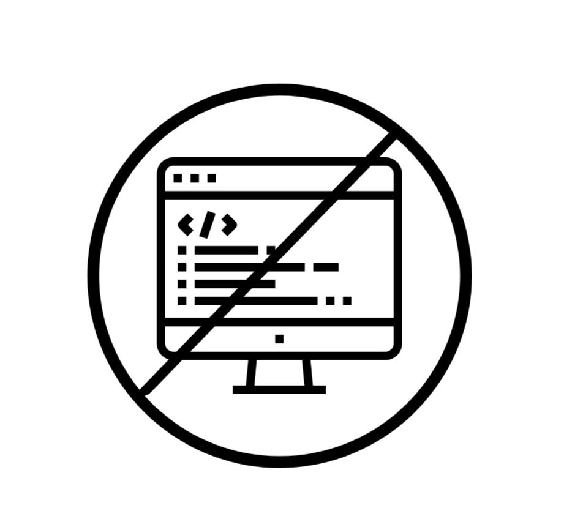
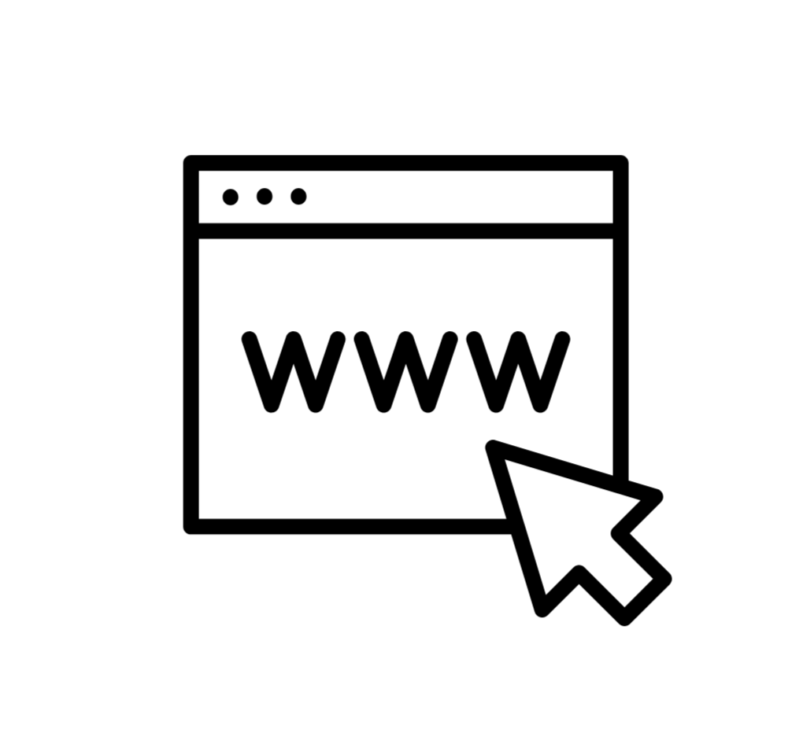

Meus Projetos.
Dê uma olhada em alguns dos meus projetos, que fiz .
.jpeg)
Laboratório de informática
Trabalhei em equipe com meus. colegas, o que proporcionou uma experiencia colaborativa incrível. Fiz parte montagem layout do laboratório, montagem e instalação de equipamentos e garantimos que estava tudo funcionando. Além disso ajudei na instalação e configuração dos softwares necessários para que os outros alunos pudessem aproveitar ao máximo as aulas.
O que foi feito:
montagem conexão elétrica configuração sistema
Site Delivery
Desenvolvi um aplicativo de delivery de lanche utilizando uma plataforma de no code, o que facilitou bastante o processo de criação. Essa abordagem permitiu que eu construísse o app sem precisar programar, utilizando apenas arrastar e soltar elementos na interface. Com recursos visuais intuitivos, pude criar uma experiência de usuário fluida, onde os clientes podem navegar facilmente pelo cardápio, fazer pedidos e acompanhar a entrega em tempo real. O uso de no code não apenas acelerou o desenvolvimento, mas também tornou o processo mais acessível, permitindo que eu me concentrasse na funcionalidade e no design do aplicativo. Agora, quem deseja um lanche gostoso pode fazer pedidos de forma rápida e prática!
O que foi feito:
no-codeDestaque
Site locadora
Neste projeto, desenvolvi um aplicativo de locadora de motos e carros, projetado para oferecer uma experiência de aluguel simplificada e eficiente. O aplicativo conta com um banco de dados robusto, que armazena informações detalhadas sobre cada veículo disponível, incluindo modelos, preços e status de disponibilidade. Uma das principais funcionalidades é o botão de busca, que permite aos usuários encontrar rapidamente o veículo que melhor atende às suas necessidades. Com essa ferramenta, os clientes podem filtrar os resultados com base em suas preferências, facilitando a escolha do veículo ideal para cada ocasião.
O que foi feito:
programação uso de banco de dados linguagem de marcação html/css MySQLDestaque

Site Gastronomia
Tenho o prazer de apresentar o site que desenvolvi para uma Noite Gastronômica Especial, feito com HTML e CSS. O design é moderno e intuitivo, pensado para proporcionar uma experiência visual envolvente e fácil de navegar. No site, você encontrará informações detalhadas sobre os pratos exclusivos, chefs convidados, e a programação do evento. Com o uso de HTML, organizei todo o conteúdo de forma clara e estruturada, garantindo que cada detalhe da noite esteja bem apresentado. Já com CSS, criei um visual elegante, com cores e fontes harmoniosas, que destacam o clima sofisticado e acolhedor da ocasião.